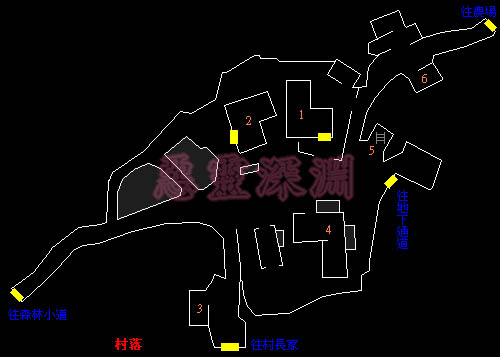
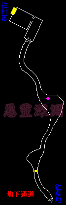
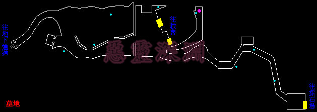
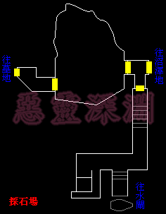
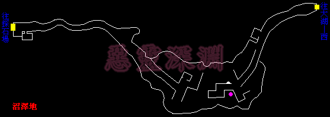
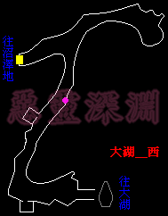
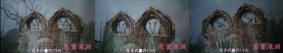

|
惡靈古堡∼惡靈古堡４----地圖攻略∼1-3
|
|
攻略內容以Normal為主，地圖上的紫色圓點●表示高價寶物的位置 ，標綠色的道具則是過關必須的重要道具。
1-3開始之後即可在村長家自由調查，若是回頭到村長的寢室，則會看到一段動畫，玩家務必要回去看看喔 。動畫結束後，從窗口 可以看到下面有個電鋸男，若是從這裡攻擊，就不用擔心了，只是要擔心村民會衝上來。
村長家相當安全，可以好好調查，不要遺漏了；廁所有個村民，卻沒有道具，進去真是不划算。離開村長家之後，外面有電鋸男在 等待，還有幾個村民，擊倒電鋸男可以拿到ルビー（紅寶石）。往村落。
 回到村落又是一大群的村民襲來，要注意編號１、２的民宅二樓屋頂上有人會投擲武器攻擊。 使用在村長家拿到的「紋章的鑰匙」後，即可前往地下通道。
 地下通道的入口梯子上方有個紅色的油燈，將它擊落拿取尖晶石，不過油燈掉落時有殺傷力，不要靠太近了。在通道中段也有一盞 紅色的油燈，雖然擊落沒有道具，可是擊落後附近所隱藏的寶石都閃閃發亮了起來，其中有高價寶物蛍石の髪飾り（螢石的髮飾） ，再往前有武器商人。 購物指南（new）：
機關槍在這個時期就可以買到槍托，對於射擊時的穩定性非常有幫助。若是玩家有射擊瞄不準的困擾，可以購買機關槍 來使用。雖然看起來彈藥好像很難取得，但是當玩家身上帶著一把機關槍時，自然取得機關槍彈藥的機率就會大增了。 通道到底爬上去會到達墓地。
 前方不遠處樹上有鳥巢兩個，將它擊落拿取道具。看到墓碑之後別急著衝過去，用閃光彈解決前面三隻烏鴉，雖然三隻離的很遠， 但是閃光彈的範圍夠大，不用擔心。旁邊的小屋有村民跑出來，靠近教會的地方也有好幾個村民，此外，找出這裡的五個藍色硬幣 ，一一擊破吧。教會後方解開機關可拿到高價寶石ステインの宝石＿緑（啤酒杯的寶石＿綠），機關的謎底就在墓地的墓碑之中。 教會前大樹上的鳥巢也別忘了。 吊橋上有幾個村民，還有三個藍色硬幣，途中的小屋其中一個箱子裡是一條蛇，最好連揮兩次刀子，或是隔點距離用槍破壞，否則 會被襲擊，蛇死後一定會留下蛋。旁邊有File教會的封鎖。
 採石場有一大群烏鴉，是賺錢的好機會，小屋的道具也先去回收。往下的樓梯會通到武器商人所在處。 購物指南（new）：
藍色硬幣射滿十個，就可以在武器商人的改買項目中以 0 pts 購買。雖說射擊十個錢幣就可以領到，但是射擊完十五個才拿 的制裁者威力將是Lv2。
 從採石場出來不久，又遇到村民推石頭欲致Leon於死地，依照指示按行動鍵來躲避，事件過後轉身往上看，有小寶石可拿。 沼澤地的地形有點複雜，而且多處設有炸藥，想要慢慢通過好好調查的玩家，最好能分批擊破，小心被夾擊。這裡樹上的鳥巢有高 價寶物アンティークパイプ（ 古董煙斗）。除了箱子裡有一條蛇，附近也有幾條蛇在到處亂爬，想收集蛋的玩家可以好好找一找。
 地圖右邊盡頭雖然只有一株紅色藥草，但是可以看到一小段動畫，往下方路上的樹上鳥巢中有５連真珠のバングル（ ５連珍珠的手 鐲）。湖邊有一 艘小船，湖中也有好幾隻鱸魚游來游去，而且這次可以乘坐小船去回收；不過要特別注意，在湖邊使用武器射擊水 面以五次為限，第六次時會發生預料不到的事，魚叉則不在此限。順道一提，想要順利抓魚不妨丟顆手榴彈，但是不要丟閃光手榴 彈，閃光手榴彈在水中產生不了什麼作用。
這裡的魚在玩家存檔重新讀取後會重置，可射擊數也會重新計算，若是真的有需要，就偷偷地來利用吧！
現在武器商人小屋還沒有開，只能往大湖＿東，接近時湖之主就會出現攻擊Leon！ BOSS戰： Leon的船被湖之主拉著跑，而浮在水面上的樹幹雖然之前自己駕駛小船時撞上完全不會有損傷，但是在被拉著跑的情況下不但會受 很大的傷害，而且還會翻船，一定要盡量避免。先確定行徑路線上沒有障礙物阻擋，然後按下瞄準鍵拿起魚叉來攻擊，當湖之主潛 到水面下消失不見的時候，只要等候畫面上的紅色指示箭頭，確認湖之主襲來的方向，湖之主是張著大口朝Leon而來，這時可以發 現湖之主口中的寄生體，那就是他的弱點，朝著他的大口丟魚叉就對了；落水的時候也要趕快按行動鍵游回船上，來不及的話會被 吞掉。重複數次，湖之主被擊敗，Leon卻被繩子纏住眼看就要被拖下湖中，連打行動鍵協助Leon切斷繩索。 本章節結束。
疑難解答
蛍石の髪飾り（螢石的髮飾） 10000ptas ステインの宝石＿緑（啤酒杯的寶石＿綠） 1000ptas アンティークパイプ（ 古董煙斗） 10000ptas ５連真珠のバングル（ ５連珍珠的手鐲） 10000ptas 組合──ステイン＿緑（啤酒杯＿綠） 10000ptas ステイン＿赤＋緑（啤酒杯＿紅＋綠） 15000ptas
使機關上的這三個圖形亮起，即可解開機關。
 未經許可禁止轉載連結 |
||||||||||||||||||||||||||||||||||||||||
惡靈深淵Biohazard Abyss http://98.to/coolbio